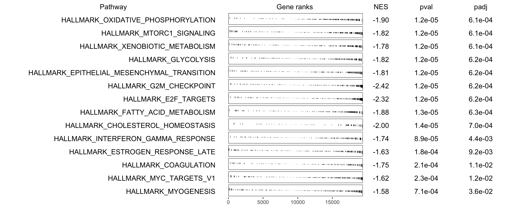
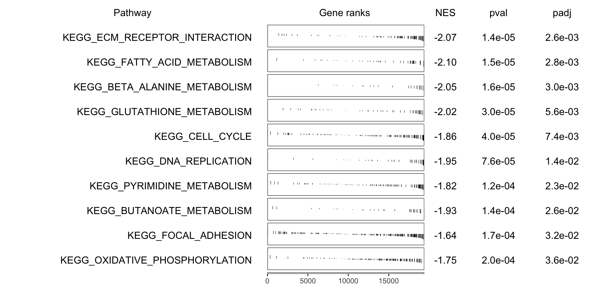
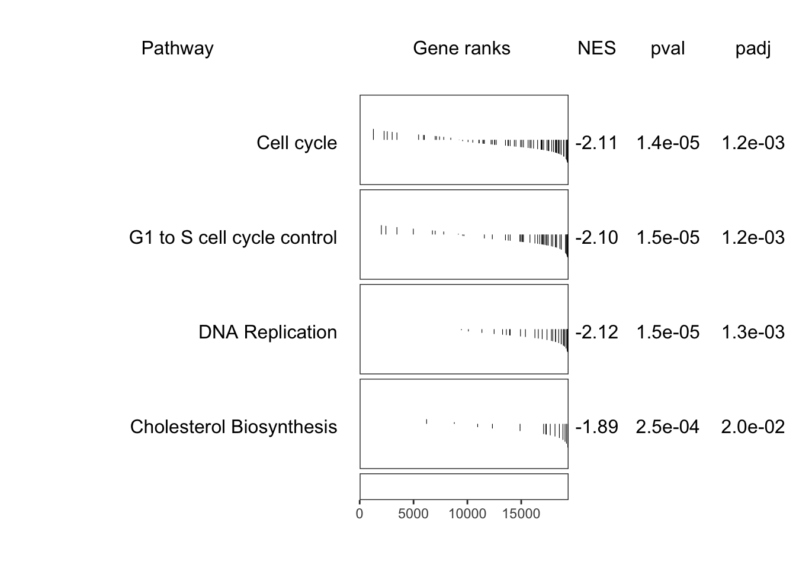

Last updated: 2020-02-28
Checks: 6 1
Knit directory: 20190717_Lardelli_RNASeq_Larvae/
This reproducible R Markdown analysis was created with workflowr (version 1.6.0). The Checks tab describes the reproducibility checks that were applied when the results were created. The Past versions tab lists the development history.
The R Markdown file has staged changes. To know which version of the R Markdown file created these results, you’ll want to first commit it to the Git repo. If you’re still working on the analysis, you can ignore this warning. When you’re finished, you can run wflow_publish to commit the R Markdown file and build the HTML.
Great job! The global environment was empty. Objects defined in the global environment can affect the analysis in your R Markdown file in unknown ways. For reproduciblity it’s best to always run the code in an empty environment.
The command set.seed(20200227) was run prior to running the code in the R Markdown file. Setting a seed ensures that any results that rely on randomness, e.g. subsampling or permutations, are reproducible.
Great job! Recording the operating system, R version, and package versions is critical for reproducibility.
Nice! There were no cached chunks for this analysis, so you can be confident that you successfully produced the results during this run.
Great job! Using relative paths to the files within your workflowr project makes it easier to run your code on other machines.
<<<<<<< HEAD Repository version: 8f91594
Great! You are using Git for version control. Tracking code development and connecting the code version to the results is critical for reproducibility. The version displayed above was the version of the Git repository at the time these results were generated.
Note that you need to be careful to ensure that all relevant files for the analysis have been committed to Git prior to generating the results (you can use wflow_publish or wflow_git_commit). workflowr only checks the R Markdown file, but you know if there are other scripts or data files that it depends on. Below is the status of the Git repository when the results were generated:
Ignored files:
Ignored: .DS_Store
Ignored: .Rhistory
Ignored: .Rproj.user/
Ignored: 1_DE-gene-analysis_cache/
Ignored: 1_DE-gene-analysis_files/
Ignored: 2_Goseq_analysis_-_IRE_enrichment_test_files/
Ignored: analysis/.DS_Store
Ignored: analysis/.Rhistory
Ignored: analysis/.Rproj.user/
Ignored: data/.DS_Store
Ignored: data/0_rawData/.DS_Store
Ignored: data/1_trimmedData/.DS_Store
Ignored: data/2_alignedData/.DS_Store
Ignored: files/
Ignored: output/.DS_Store
Unstaged changes:
Modified: analysis/2_Goseq_analysis_and_IRE_enrichment_test.Rmd
Modified: analysis/3_GSEA.Rmd
Staged changes:
Modified: analysis/3_GSEA.Rmd
Note that any generated files, e.g. HTML, png, CSS, etc., are not included in this status report because it is ok for generated content to have uncommitted changes.
These are the previous versions of the R Markdown and HTML files. If you’ve configured a remote Git repository (see ?wflow_git_remote), click on the hyperlinks in the table below to view them.
| File | Version | Author | Date | Message |
|---|---|---|---|---|
| Rmd | <<<<<<< HEAD 8f91594 | yangdongau | 2020-02-28 | Add in annotations. |
| html | 8f91594 | yangdongau | 2020-02-28 | Add in annotations. |
| Rmd | ======= >>>>>>> 8f915944c99890f736385d0ea0415d120d3aa8c3 4e8adcc | yangdongau | 2020-02-28 | change wrong work |
| html | 4e8adcc | yangdongau | 2020-02-28 | change wrong work |
| Rmd | 91568d2 | yangdongau | 2020-02-28 | Set KEGG diagram directory clean up the folder |
| html | 91568d2 | yangdongau | 2020-02-28 | Set KEGG diagram directory clean up the folder |
| Rmd | 0ce8f79 | yangdongau | 2020-02-27 | clean up library packages |
| html | 0ce8f79 | yangdongau | 2020-02-27 | clean up library packages |
| Rmd | dc5cbe9 | yangdongau | 2020-02-27 | rename&clean up packages |
| Rmd | 3b63601 | yangdongau | 2020-02-27 | index 3_GSEA.rmd |
| html | 3b63601 | yangdongau | 2020-02-27 | index 3_GSEA.rmd |
| Rmd | 323a5d7 | Yang Dong | 2020-02-27 | Add in library(rWikiPathways) |
| Rmd | e75f1f6 | Yang Dong | 2020-02-27 | fix |
| Rmd | bc39d1c | Yang Dong | 2020-02-27 | Output results |
| Rmd | ae5f031 | Yang Dong | 2020-02-26 | update of wikipathway |
| Rmd | b2d2284 | Yang Dong | 2020-02-25 | Reorganized |
library(limma)
library(edgeR)
library(tidyverse)
library(magrittr)
library(pander)
library(ggrepel)
library(scales)
library(plyr)
library(ggraph)
library(tidygraph)
library(fgsea)
library(pathview)
library(msigdbr)
library(rWikiPathways)
theme_set(theme_bw())
panderOptions("big.mark", ",")
panderOptions("table.split.table", Inf)
panderOptions("table.style", "rmarkdown")
if (interactive()) setwd(here::here("analysis"))dgeList <- read_rds(here::here("data","dgeList.rds"))
entrezGenes <- dgeList$genes %>%
dplyr::filter(!is.na(entrez_gene)) %>%
unnest(entrez_gene) %>%
dplyr::rename(entrez_gene = entrez_gene)
topTable <- file.path(here::here("output", "topTable.csv")) %>%
read_csv()Genes were ranked by -sign(logFC)*log10(PValue).
ranks <- topTable %>%
mutate(stat = -sign(logFC) * log10(PValue)) %>%
dplyr::arrange(stat) %>%
with(structure(stat, names = ensembl_gene_id))Hallmark and KEGG pathway gene mappings were achieved by msigdbr, and Wiki pathway gene mapping was downloaded by rWikiPathways.
hallmark <- msigdbr("Danio rerio", category = "H") %>%
left_join(entrezGenes) %>%
dplyr::filter(!is.na(ensembl_gene_id)) %>%
distinct(gs_name, ensembl_gene_id, .keep_all = TRUE)
hallmarkByGene <- hallmark %>%
split(f = .$ensembl_gene_id) %>%
lapply(extract2, "gs_name")
hallmarkByID <- hallmark %>%
split(f = .$gs_name) %>%
lapply(extract2, "ensembl_gene_id")kegg <- msigdbr("Danio rerio", category = "C2", subcategory = "CP:KEGG") %>%
left_join(entrezGenes) %>%
dplyr::filter(!is.na(ensembl_gene_id)) %>%
distinct(gs_name, ensembl_gene_id, .keep_all = TRUE)
keggByGene <- kegg %>%
split(f = .$ensembl_gene_id) %>%
lapply(extract2, "gs_name")
keggByID <- kegg %>%
split(f = .$gs_name) %>%
lapply(extract2, "ensembl_gene_id")wikidownload <- downloadPathwayArchive(organism = "Danio rerio", format = "gmt")
wiki <- gmtPathways(here::here("analysis", "wikipathways-20200210-gmt-Danio_rerio.gmt"))
wikilist <- names(wiki) %>%
lapply(function(x){
tibble(pathway = x, entrez_gene = wiki[[x]])
}) %>%
bind_rows() %>%
mutate(entrez_gene = as.numeric(entrez_gene)) %>%
left_join(entrezGenes) %>%
dplyr::filter(!is.na(ensembl_gene_id)) %>%
distinct(pathway, ensembl_gene_id, .keep_all = TRUE)
wikiByGene <- wikilist %>%
split(f = .$ensembl_gene_id) %>%
lapply(extract2, "pathway")
wikiByID <- wikilist %>%
split(f = .$pathway) %>%
lapply(extract2, "ensembl_gene_id")Enrichment analysis of each pathway data sets were performed by fgsea, using gene ranks and mappings. A bonferroni-correction cutoff of 0.05 was used to identify signficant results.
set.seed(22)
# Run GSEA for hallmark
fgseaHallmark <- fgsea(hallmarkByID, ranks, nperm=1e5) %>%
as_tibble() %>%
dplyr::rename(FDR = padj) %>%
mutate(padj = p.adjust(pval, "bonferroni")) %>%
dplyr::arrange(pval)
fgseaHallmarkTop <- fgseaHallmark %>%
dplyr::filter(padj < 0.05)
fgseaHallmarkTop %>%
dplyr::select(-leadingEdge, -nMoreExtreme) %>%
pander(
style = "rmarkdown",
split.tables = Inf,
justify = "lrrrrrr",
caption = paste(
"The", nrow(.), "most significantly enriched Hallmark pathways.",
"This corresponds to an FDR of", percent(max(.$FDR)))
)| pathway | pval | FDR | ES | NES | size | padj |
|---|---|---|---|---|---|---|
| HALLMARK_OXIDATIVE_PHOSPHORYLATION | 1.22e-05 | 7.733e-05 | -0.5558 | -1.9 | 202 | 0.0006101 |
| HALLMARK_MTORC1_SIGNALING | 1.224e-05 | 7.733e-05 | -0.5328 | -1.818 | 198 | 0.0006118 |
| HALLMARK_XENOBIOTIC_METABOLISM | 1.229e-05 | 7.733e-05 | -0.524 | -1.783 | 193 | 0.0006143 |
| HALLMARK_GLYCOLYSIS | 1.231e-05 | 7.733e-05 | -0.5341 | -1.816 | 191 | 0.0006154 |
| HALLMARK_EPITHELIAL_MESENCHYMAL_TRANSITION | 1.234e-05 | 7.733e-05 | -0.5348 | -1.814 | 187 | 0.0006171 |
| HALLMARK_G2M_CHECKPOINT | 1.239e-05 | 7.733e-05 | -0.7154 | -2.42 | 182 | 0.0006197 |
| HALLMARK_E2F_TARGETS | 1.247e-05 | 7.733e-05 | -0.6879 | -2.317 | 174 | 0.0006236 |
| HALLMARK_FATTY_ACID_METABOLISM | 1.264e-05 | 7.733e-05 | -0.5648 | -1.883 | 157 | 0.0006319 |
| HALLMARK_CHOLESTEROL_HOMEOSTASIS | 1.392e-05 | 7.733e-05 | -0.6557 | -1.997 | 76 | 0.0006959 |
| HALLMARK_INTERFERON_GAMMA_RESPONSE | 8.888e-05 | 0.0004444 | -0.5242 | -1.741 | 152 | 0.004444 |
| HALLMARK_ESTROGEN_RESPONSE_LATE | 0.000184 | 0.0008364 | -0.4788 | -1.631 | 195 | 0.0092 |
| HALLMARK_COAGULATION | 0.0002102 | 0.0008759 | -0.543 | -1.75 | 117 | 0.01051 |
| HALLMARK_MYC_TARGETS_V1 | 0.0002328 | 0.0008952 | -0.4753 | -1.62 | 197 | 0.01164 |
| HALLMARK_MYOGENESIS | 0.0007132 | 0.002547 | -0.4647 | -1.58 | 192 | 0.03566 |
# Make a table plot of significant Hallmark pathways
if (interactive()) grid::grid.newpage()
plotGseaTable(
hallmarkByID[dplyr::filter(fgseaHallmark, padj < 0.05)$pathway], ranks, fgseaHallmark, gseaParam = 0.5
)
| Version | Author | Date |
|---|---|---|
| 3b63601 | yangdongau | 2020-02-27 |
# Set seed to enable reproducibility
set.seed(22)
# Run GSEA for KEGG
fgseaKEGG <- fgsea(keggByID, ranks, nperm=1e5) %>%
as_tibble() %>%
dplyr::rename(FDR = padj) %>%
mutate(padj = p.adjust(pval, "bonferroni")) %>%
dplyr::arrange(pval)
# Create an object of pathways with adjusted p-value < 0.05 for construction of network diagrams. This should be done differently next time, but too much work has been done to change it now.
fgseaKEGGTop <- fgseaKEGG %>%
dplyr::filter(padj < 0.05)
fgseaKEGGTop %>%
dplyr::select(-leadingEdge, -nMoreExtreme) %>%
pander(
style = "rmarkdown",
split.tables = Inf,
justify = "lrrrrrr",
caption = paste(
"The", nrow(.), "most significantly enriched KEGG pathways.",
"This corresponds to an FDR of", percent(max(.$FDR)))
)| pathway | pval | FDR | ES | NES | size | padj |
|---|---|---|---|---|---|---|
| KEGG_ECM_RECEPTOR_INTERACTION | 1.399e-05 | 0.0009883 | -0.6872 | -2.073 | 71 | 0.002602 |
| KEGG_FATTY_ACID_METABOLISM | 1.487e-05 | 0.0009883 | -0.7538 | -2.097 | 43 | 0.002767 |
| KEGG_BETA_ALANINE_METABOLISM | 1.594e-05 | 0.0009883 | -0.835 | -2.047 | 22 | 0.002965 |
| KEGG_GLUTATHIONE_METABOLISM | 2.985e-05 | 0.001388 | -0.7293 | -2.02 | 42 | 0.005552 |
| KEGG_CELL_CYCLE | 3.983e-05 | 0.001482 | -0.5819 | -1.861 | 109 | 0.007408 |
| KEGG_DNA_REPLICATION | 7.616e-05 | 0.002361 | -0.732 | -1.954 | 34 | 0.01417 |
| KEGG_PYRIMIDINE_METABOLISM | 0.0001228 | 0.00323 | -0.5835 | -1.816 | 89 | 0.02283 |
| KEGG_BUTANOATE_METABOLISM | 0.0001389 | 0.00323 | -0.7416 | -1.932 | 30 | 0.02584 |
| KEGG_FOCAL_ADHESION | 0.000173 | 0.003575 | -0.4842 | -1.643 | 186 | 0.03217 |
| KEGG_OXIDATIVE_PHOSPHORYLATION | 0.0001954 | 0.003634 | -0.5379 | -1.752 | 127 | 0.03634 |
# Make a table plot of significant KEGG pathways
if (interactive()) grid::grid.newpage()
plotGseaTable(
keggByID[fgseaKEGGTop$pathway], ranks, fgseaKEGG, gseaParam = 0.5
)
| Version | Author | Date |
|---|---|---|
| 3b63601 | yangdongau | 2020-02-27 |
# Set seed to enable reproducibility
set.seed(22)
# Run GSEA for WikiPathways
fgseaWiki <- fgsea(wikiByID, ranks, nperm=1e5) %>%
as_tibble() %>%
dplyr::rename(FDR = padj) %>%
mutate(padj = p.adjust(pval, "bonferroni")) %>%
dplyr::arrange(pval)
# Create an object of pathways with adjusted p-value < 0.05 for construction of network diagrams. This should be done differently next time, but too much work has been done to change it now.
fgseaWikiTop <- fgseaWiki %>%
dplyr::filter(padj < 0.05)
fgseaWikiTop %>%
dplyr::select(-leadingEdge, -nMoreExtreme) %>%
pander(
style = "rmarkdown",
split.tables = Inf,
justify = "lrrrrrr",
caption = paste(
"The", nrow(.), "most significantly enriched Wiki pathways.",
"This corresponds to an FDR of", percent(max(.$FDR)))
)| pathway | pval | FDR | ES | NES | size | padj |
|---|---|---|---|---|---|---|
| Cell cycle%WikiPathways_20200210%WP1393%Danio rerio | 1.401e-05 | 0.0004241 | -0.6997 | -2.109 | 71 | 0.001163 |
| G1 to S cell cycle control%WikiPathways_20200210%WP445%Danio rerio | 1.463e-05 | 0.0004241 | -0.7369 | -2.097 | 49 | 0.001214 |
| DNA Replication%WikiPathways_20200210%WP451%Danio rerio | 1.533e-05 | 0.0004241 | -0.807 | -2.117 | 31 | 0.001272 |
| Cholesterol Biosynthesis%WikiPathways_20200210%WP1387%Danio rerio | 0.0002464 | 0.005113 | -0.837 | -1.894 | 15 | 0.02045 |
# Make a table plot of significant WikiPathways pathways
if (interactive()) grid::grid.newpage()
plotGseaTable(
wikiByID[fgseaWikiTop$pathway], ranks, fgseaWiki, gseaParam = 0.5
)
| Version | Author | Date |
|---|---|---|
| 3b63601 | yangdongau | 2020-02-27 |
GSEAresult <- bind_rows(
fgseaHallmark,
fgseaKEGG,
fgseaWiki
) %>%
dplyr::filter(padj < 0.05) %>%
dplyr::select(
pathway, ES, NES, size, padj
)
write_csv(GSEAresult,here::here("output","GSEA_resulst.csv"))Use pathview to plot each significant KEGG pathway so as to visualize the changes.
Use pathview to plot each significant KEGG pathway so as to visualize the changes.
>>>>>>> 8f915944c99890f736385d0ea0415d120d3aa8c3setwd(here::here("keggdiagram"))
# ECM receptor interaction
pv.out <- pathview(gene.data = ranks,
pathway.id = "04512",
species = "Danio rerio",
gene.idtype = "ENSEMBL",
limit = list(gene=5, cpd=1))[1] "Note: 1192 of 19396 unique input IDs unmapped."# Fatty acid metabolism
pv.out <- pathview(gene.data = ranks,
pathway.id = "01212",
species = "Danio rerio",
gene.idtype = "ENSEMBL",
limit = list(gene=5, cpd=1))[1] "Note: 1192 of 19396 unique input IDs unmapped."# Beta-Alanine metabolism
pv.out <- pathview(gene.data = ranks,
pathway.id = "00410",
species = "Danio rerio",
gene.idtype = "ENSEMBL",
limit = list(gene=5, cpd=1))[1] "Note: 1192 of 19396 unique input IDs unmapped."# Glutathione metabolism
pv.out <- pathview(gene.data = ranks,
pathway.id = "00480",
species = "Danio rerio",
gene.idtype = "ENSEMBL",
limit = list(gene=5, cpd=1))[1] "Note: 1192 of 19396 unique input IDs unmapped."# Cell cycle
pv.out <- pathview(gene.data = ranks,
pathway.id = "04110",
species = "Danio rerio",
gene.idtype = "ENSEMBL",
limit = list(gene=5, cpd=1))[1] "Note: 1192 of 19396 unique input IDs unmapped."# DNA replication
pv.out <- pathview(gene.data = ranks,
pathway.id = "03030",
species = "Danio rerio",
gene.idtype = "ENSEMBL",
limit = list(gene=5, cpd=1))[1] "Note: 1192 of 19396 unique input IDs unmapped."# Pyrimidine metabolism
pv.out <- pathview(gene.data = ranks,
pathway.id = "00240",
species = "Danio rerio",
gene.idtype = "ENSEMBL",
limit = list(gene=5, cpd=1))[1] "Note: 1192 of 19396 unique input IDs unmapped."# Butanoate metabolism
pv.out <- pathview(gene.data = ranks,
pathway.id = "00650",
species = "Danio rerio",
gene.idtype = "ENSEMBL",
limit = list(gene=5, cpd=1))[1] "Note: 1192 of 19396 unique input IDs unmapped."# Focal adhesion
pv.out <- pathview(gene.data = ranks,
pathway.id = "04510",
species = "Danio rerio",
gene.idtype = "ENSEMBL",
limit = list(gene=5, cpd=1))[1] "Note: 1192 of 19396 unique input IDs unmapped."# Oxidative phosphorylation
pv.out <- pathview(gene.data = ranks,
pathway.id = "00190",
species = "Danio rerio",
gene.idtype = "ENSEMBL",
limit = list(gene=5, cpd=1))[1] "Note: 1192 of 19396 unique input IDs unmapped."
devtools::session_info()─ Session info ──────────────────────────────────────────────────────────
setting value
version R version 3.6.0 (2019-04-26)
os macOS Mojave 10.14.6
system x86_64, darwin15.6.0
ui X11
language (EN)
collate en_AU.UTF-8
ctype en_AU.UTF-8
tz Australia/Adelaide
date 2020-02-28
─ Packages ──────────────────────────────────────────────────────────────
package * version date lib source
AnnotationDbi * 1.46.1 2019-08-20 [1] Bioconductor
assertthat 0.2.1 2019-03-21 [1] CRAN (R 3.6.0)
backports 1.1.4 2019-04-10 [1] CRAN (R 3.6.0)
Biobase * 2.44.0 2019-05-02 [1] Bioconductor
BiocGenerics * 0.30.0 2019-05-02 [1] Bioconductor
BiocParallel 1.18.1 2019-08-06 [1] Bioconductor
Biostrings 2.52.0 2019-05-02 [1] Bioconductor
bit 1.1-14 2018-05-29 [1] CRAN (R 3.6.0)
bit64 0.9-7 2017-05-08 [1] CRAN (R 3.6.0)
bitops 1.0-6 2013-08-17 [1] CRAN (R 3.6.0)
blob 1.2.0 2019-07-09 [1] CRAN (R 3.6.0)
broom 0.5.2 2019-04-07 [1] CRAN (R 3.6.0)
callr 3.3.1 2019-07-18 [1] CRAN (R 3.6.0)
caTools 1.17.1.2 2019-03-06 [1] CRAN (R 3.6.0)
cellranger 1.1.0 2016-07-27 [1] CRAN (R 3.6.0)
cli 1.1.0 2019-03-19 [1] CRAN (R 3.6.0)
colorspace 1.4-1 2019-03-18 [1] CRAN (R 3.6.0)
crayon 1.3.4 2017-09-16 [1] CRAN (R 3.6.0)
curl 4.0 2019-07-22 [1] CRAN (R 3.6.0)
data.table 1.12.2 2019-04-07 [1] CRAN (R 3.6.0)
DBI 1.0.0 2018-05-02 [1] CRAN (R 3.6.0)
desc 1.2.0 2018-05-01 [1] CRAN (R 3.6.0)
devtools 2.2.2 2020-02-17 [1] CRAN (R 3.6.0)
digest 0.6.20 2019-07-04 [1] CRAN (R 3.6.0)
dplyr * 0.8.3 2019-07-04 [1] CRAN (R 3.6.0)
edgeR * 3.26.7 2019-08-13 [1] Bioconductor
ellipsis 0.3.0 2019-09-20 [1] CRAN (R 3.6.0)
evaluate 0.14 2019-05-28 [1] CRAN (R 3.6.0)
farver 1.1.0 2018-11-20 [1] CRAN (R 3.6.0)
fastmatch 1.1-0 2017-01-28 [1] CRAN (R 3.6.0)
fgsea * 1.10.1 2019-08-21 [1] Bioconductor
forcats * 0.4.0 2019-02-17 [1] CRAN (R 3.6.0)
fs 1.3.1 2019-05-06 [1] CRAN (R 3.6.0)
generics 0.0.2 2018-11-29 [1] CRAN (R 3.6.0)
ggforce 0.3.1 2019-08-20 [1] CRAN (R 3.6.0)
ggplot2 * 3.2.1 2019-08-10 [1] CRAN (R 3.6.0)
ggraph * 1.0.2 2018-07-07 [1] CRAN (R 3.6.0)
ggrepel * 0.8.1 2019-05-07 [1] CRAN (R 3.6.0)
git2r 0.26.1 2019-06-29 [1] CRAN (R 3.6.0)
glue 1.3.1 2019-03-12 [1] CRAN (R 3.6.0)
graph 1.62.0 2019-05-02 [1] Bioconductor
gridExtra 2.3 2017-09-09 [1] CRAN (R 3.6.0)
gtable 0.3.0 2019-03-25 [1] CRAN (R 3.6.0)
haven 2.1.1 2019-07-04 [1] CRAN (R 3.6.0)
here 0.1 2017-05-28 [1] CRAN (R 3.6.0)
hms 0.5.1 2019-08-23 [1] CRAN (R 3.6.0)
htmltools 0.3.6 2017-04-28 [1] CRAN (R 3.6.0)
httpuv 1.5.1 2019-04-05 [1] CRAN (R 3.6.0)
httr 1.4.1 2019-08-05 [1] CRAN (R 3.6.0)
igraph 1.2.4.1 2019-04-22 [1] CRAN (R 3.6.0)
IRanges * 2.18.2 2019-08-24 [1] Bioconductor
jsonlite 1.6 2018-12-07 [1] CRAN (R 3.6.0)
KEGGgraph 1.44.0 2019-05-02 [1] Bioconductor
KEGGREST 1.24.1 2019-10-08 [1] Bioconductor
knitr 1.24 2019-08-08 [1] CRAN (R 3.6.0)
labeling 0.3 2014-08-23 [1] CRAN (R 3.6.0)
later 0.8.0 2019-02-11 [1] CRAN (R 3.6.0)
lattice 0.20-38 2018-11-04 [1] CRAN (R 3.6.0)
lazyeval 0.2.2 2019-03-15 [1] CRAN (R 3.6.0)
limma * 3.40.6 2019-07-26 [1] Bioconductor
locfit 1.5-9.1 2013-04-20 [1] CRAN (R 3.6.0)
lubridate 1.7.4 2018-04-11 [1] CRAN (R 3.6.0)
magrittr * 1.5 2014-11-22 [1] CRAN (R 3.6.0)
MASS 7.3-51.4 2019-03-31 [1] CRAN (R 3.6.0)
Matrix 1.2-17 2019-03-22 [1] CRAN (R 3.6.0)
memoise 1.1.0 2017-04-21 [1] CRAN (R 3.6.0)
modelr 0.1.5 2019-08-08 [1] CRAN (R 3.6.0)
msigdbr * 7.0.1 2019-09-04 [1] CRAN (R 3.6.0)
munsell 0.5.0 2018-06-12 [1] CRAN (R 3.6.0)
nlme 3.1-141 2019-08-01 [1] CRAN (R 3.6.0)
org.Dr.eg.db 3.8.2 2019-11-20 [1] Bioconductor
org.Hs.eg.db * 3.8.2 2019-11-20 [1] Bioconductor
pander * 0.6.3 2018-11-06 [1] CRAN (R 3.6.0)
pathview * 1.24.0 2019-05-02 [1] Bioconductor
pillar 1.4.2 2019-06-29 [1] CRAN (R 3.6.0)
pkgbuild 1.0.6 2019-10-09 [1] CRAN (R 3.6.0)
pkgconfig 2.0.2 2018-08-16 [1] CRAN (R 3.6.0)
pkgload 1.0.2 2018-10-29 [1] CRAN (R 3.6.0)
plyr * 1.8.4 2016-06-08 [1] CRAN (R 3.6.0)
png 0.1-7 2013-12-03 [1] CRAN (R 3.6.0)
polyclip 1.10-0 2019-03-14 [1] CRAN (R 3.6.0)
prettyunits 1.0.2 2015-07-13 [1] CRAN (R 3.6.0)
processx 3.4.1 2019-07-18 [1] CRAN (R 3.6.0)
promises 1.0.1 2018-04-13 [1] CRAN (R 3.6.0)
ps 1.3.0 2018-12-21 [1] CRAN (R 3.6.0)
purrr * 0.3.3 2019-10-18 [1] CRAN (R 3.6.0)
R6 2.4.0 2019-02-14 [1] CRAN (R 3.6.0)
Rcpp * 1.0.2 2019-07-25 [1] CRAN (R 3.6.0)
RCurl 1.95-4.12 2019-03-04 [1] CRAN (R 3.6.0)
readr * 1.3.1 2018-12-21 [1] CRAN (R 3.6.0)
readxl 1.3.1 2019-03-13 [1] CRAN (R 3.6.0)
remotes 2.1.1 2020-02-15 [1] CRAN (R 3.6.0)
Rgraphviz 2.28.0 2019-05-02 [1] Bioconductor
RJSONIO 1.3-1.4 2020-01-15 [1] CRAN (R 3.6.0)
rlang 0.4.4 2020-01-28 [1] CRAN (R 3.6.0)
rmarkdown 1.15 2019-08-21 [1] CRAN (R 3.6.0)
rprojroot 1.3-2 2018-01-03 [1] CRAN (R 3.6.0)
RSQLite 2.1.2 2019-07-24 [1] CRAN (R 3.6.0)
rstudioapi 0.10 2019-03-19 [1] CRAN (R 3.6.0)
rvest 0.3.4 2019-05-15 [1] CRAN (R 3.6.0)
rWikiPathways * 1.4.1 2019-07-30 [1] Bioconductor
S4Vectors * 0.22.0 2019-05-02 [1] Bioconductor
scales * 1.0.0 2018-08-09 [1] CRAN (R 3.6.0)
sessioninfo 1.1.1 2018-11-05 [1] CRAN (R 3.6.0)
stringi 1.4.3 2019-03-12 [1] CRAN (R 3.6.0)
stringr * 1.4.0 2019-02-10 [1] CRAN (R 3.6.0)
testthat 2.3.1 2019-12-01 [1] CRAN (R 3.6.0)
tibble * 2.1.3 2019-06-06 [1] CRAN (R 3.6.0)
tidygraph * 1.1.2 2019-02-18 [1] CRAN (R 3.6.0)
tidyr * 0.8.3 2019-03-01 [1] CRAN (R 3.6.0)
tidyselect 0.2.5 2018-10-11 [1] CRAN (R 3.6.0)
tidyverse * 1.2.1 2017-11-14 [1] CRAN (R 3.6.0)
tweenr 1.0.1 2018-12-14 [1] CRAN (R 3.6.0)
usethis 1.5.1 2019-07-04 [1] CRAN (R 3.6.0)
vctrs 0.2.0 2019-07-05 [1] CRAN (R 3.6.0)
viridis 0.5.1 2018-03-29 [1] CRAN (R 3.6.0)
viridisLite 0.3.0 2018-02-01 [1] CRAN (R 3.6.0)
whisker 0.4 2019-08-28 [1] CRAN (R 3.6.0)
withr 2.1.2 2018-03-15 [1] CRAN (R 3.6.0)
workflowr 1.6.0 2019-12-19 [1] CRAN (R 3.6.0)
xfun 0.9 2019-08-21 [1] CRAN (R 3.6.0)
XML 3.98-1.20 2019-06-06 [1] CRAN (R 3.6.0)
xml2 1.2.2 2019-08-09 [1] CRAN (R 3.6.0)
XVector 0.24.0 2019-05-02 [1] Bioconductor
yaml 2.2.0 2018-07-25 [1] CRAN (R 3.6.0)
zeallot 0.1.0 2018-01-28 [1] CRAN (R 3.6.0)
zlibbioc 1.30.0 2019-05-02 [1] Bioconductor
[1] /Library/Frameworks/R.framework/Versions/3.6/Resources/library